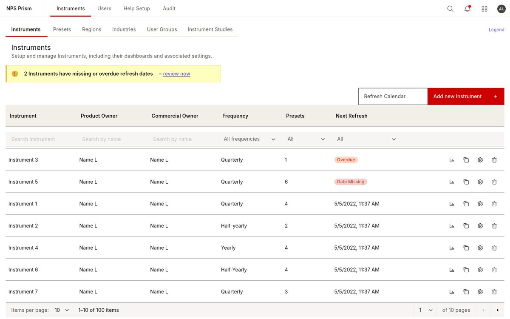
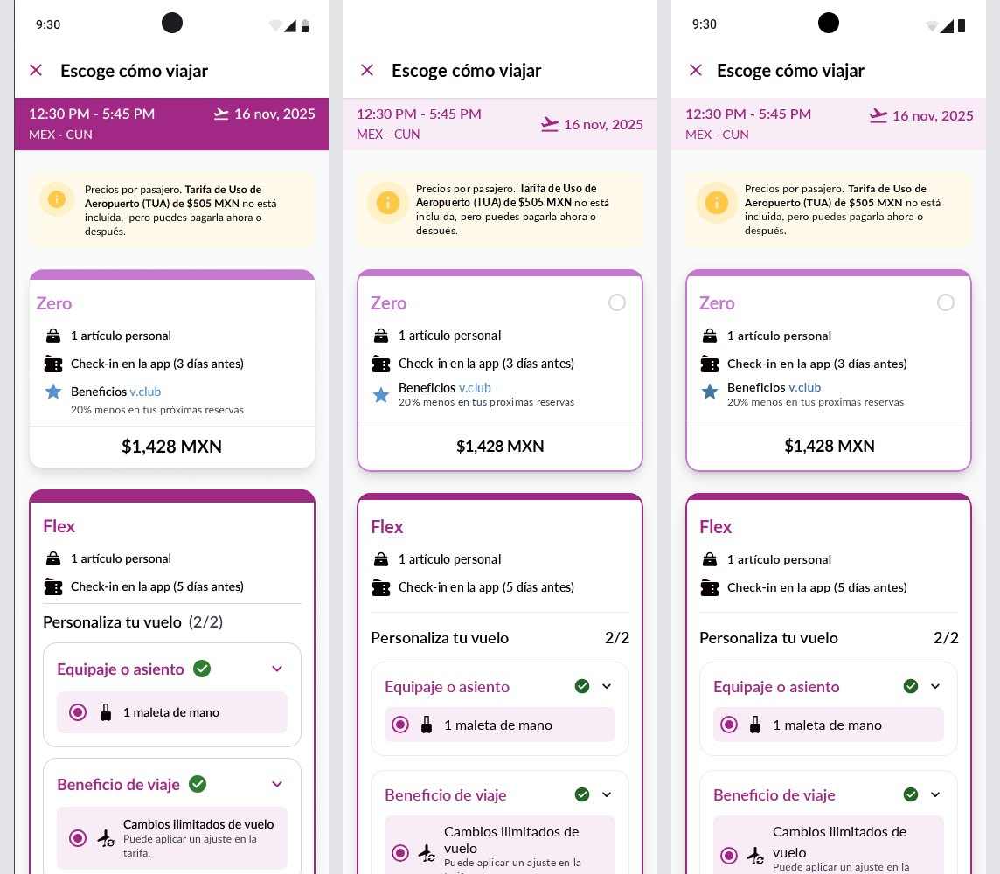
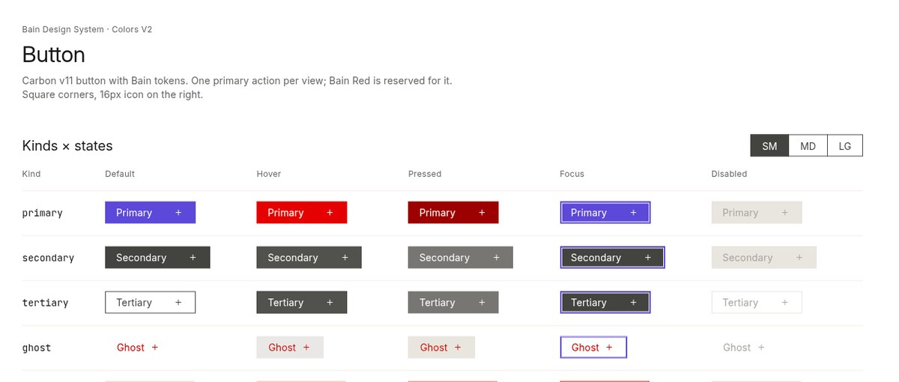
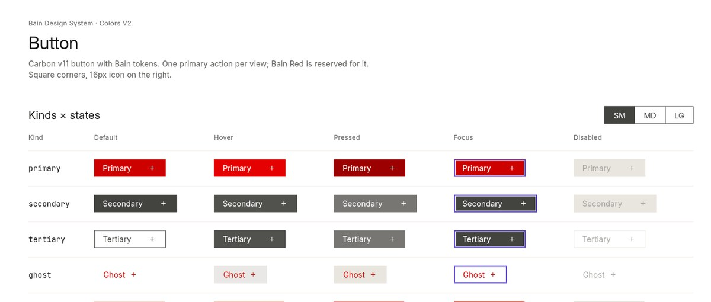

Bain · web
Diseño Applaudo · Herramientas de diseño con IA
Las probamos en proyectos reales. Esto es lo que salió.
Qué pruebas corrimos


En cada prueba, MagicPath y Paper trabajaron por separado.
Cómo las probamos
Mismo punto de partida, mismo revisor.
Punto de partida: el código del sistema de diseño y Figma. Desde ahí, MagicPath y Paper construyen cada una por su cuenta. Sentinel revisa cada resultado. Resultado: sistema de diseño y pantallas. Ninguna herramienta recibió el trabajo de la otra.
Qué logramos · Bain
Donde Figma y el sistema de diseño no coincidían, ganó el sistema de diseño.
Qué logramos · Volaris
Qué logramos
recreados en Paper
una tanda en cada herramienta, aprobadas a la primera
el plan de MagicPath que usamos
el plan de Paper que usamos
Hallazgo principal


MagicPath 0 de 3 archivos se actualizaron.
Paper El otro archivo no cambió ni un píxel.
Hallazgo del 22 de octubre · MagicPath
No se actualiza sola, ni con Refresh. Tampoco hay opción para actualizarla.
El componente vive en una librería. Lo arrastras a otro archivo y se crea una copia fija, sin vínculo con el original. Si cambias la librería, tu archivo no cambia: ni solo, ni con Refresh, y no hay opción para actualizar. Para recibir el cambio hay que volver a arrastrar el componente.
Hallazgos
Recomendaciones
MagicPath: de la idea a pantallas en código, rápido.
Paper: explorar colores y tipografía antes de fijar el sistema.
MagicPath: trae los componentes que ya existen y suma flujos nuevos.
Paper: prueba rápido un cambio de estilo.
Las dos: solo para explorar una funcionalidad aparte.
El riesgo: una segunda fuente de verdad que nadie mantiene.
Si eliges una sola: MagicPath, porque lo que entrega es código.
Recomendaciones · Móvil
Para demos de flujos que se pueden abrir. Antes, confirma la política del cliente.
Para explorar estilos en muchas pantallas de un mismo archivo.
Son aproximaciones web: revisa el resultado final en el teléfono.
Anexo